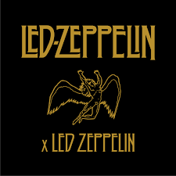

Mejores bandas de Rock, y no del mundo para no ofender :/
Top 1 Los Eso Brad
No hay que explicar
Top 2 The Beatles
The Beatles, más conocidos en el mundo hispano como Los Beatles,
fue una banda británica de rock formada en Liverpool durante los años 1960. Son considerados uno de los iconos culturales más grandes del siglo XX.
Mundialmente, desafiaron paradigmas y estereotipos abordando todos los problemas socioculturales de la época.
Top 3 Led Zeppelin
Led Zeppelin fue un grupo británico de rock fundado en Londres en 1968
Led Zeppelin presentó elementos de un amplio espectro de influencias y géneros, como el blues, el rock and roll, el soul, hard rock, la música celta, el rockabilly, la música india, rock progresivo, el folk, el rock psicodélico, reggae, el country, entre otros y es uno de los grupos seminales para el surgimiento del heavy metal.Led Zeppelin presentó elementos de un amplio espectro de influencias y géneros, como el blues, el rock and roll, el soul, hard rock, la música celta, el rockabilly, la música india, rock progresivo, el folk, el rock psicodélico, reggae, el country, entre otros y es uno de los grupos seminales para el surgimiento del heavy metal.

Nirvana
Nirvana fue una banda de rock estadounidense formada en Aberdeen (Washington), en 1987.
Fundada por el cantante y guitarrista Kurt Cobain y el bajista Krist Novoselic.
El éxito de la banda popularizó el rock alternativo y, a menudo, se los mencionaba como la banda proa de la Generación X. A pesar de contar con una corta carrera profesional que duró sólo siete años, su música mantiene un seguimiento popular y continúa influyendo en la cultura del rock moderno.